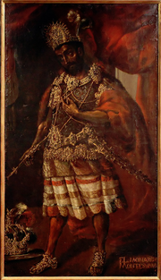

Contenido
Moctezuma II Xocoyotzin,que eventualmente resultaría en su imperio siendo conquistado por los españoles y tlaxcaltecas bajo el mando principal del capitán español Hernán Cortés, quien conoció por primera vez en el año de 1519.
Sus acciones militares resultaron también en un fuerte aumento de hostilidades entre Tlaxcala y México, resultando en una series de guerras devastadoras entre estos dos bandos que luego provocaría la alianza entre España y Tlaxcala, uno de los puntos clave en la Conquista de México.
Tras su muerte, hubo otros dos monarcas quienes gobernaron el imperio, siendo su sucesor su hermano Cuitláhuac y el último siendo su sobrino Cuauhtémoc. Sin embargo, sus gobiernos no duraron mucho tiempo, pues el imperio caería bajo control español en agosto de 1521, un año después de su muerte.
Su figura se ha mantenido controvertida y enigmática a lo largo del tiempo, siendo descrito de maneras totalmente distintas entre sus contemporáneos. Algunos de éstos lo han descrito como uno de los mejores líderes en la historia mexicana, describiéndolo como un líder noble que intentaba mantener su imperio estable en tiempos de crisis y que realizó grandes conquistas.
Otros lo han descrito como un tirano quien quería usurpar bajo cualquier medio posible el control absoluto del imperio y conquistar a cualquier pueblo posible. Otras fuentes lo describen como un líder indeciso y supersticioso. Las razones de varias de la decisiones tomadas durante su gobierno, especialmente tras contactar a los españoles, continúan siendo un tema de debate en la actualidad.